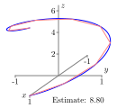

How can a definite integral be used to measure the length of a curve in 2- or 3-space?
Why is arc length useful as a parameter?
Given a space curve, there are two natural geometric questions one might ask: how long is the curve and how much does the curve bend? In this section, we answer the first question by developing techniques for measuring the length of a space curve and will address the second question in Section10.6.
Change the preview activity to be an approximation of the arc length using 5 points. Do you think your approximation is above or below the actual length? Ask questions about whether you think an approximation with 10 points would have to be a better approximation? Do you think there is any way to use line segments to overestimate arc length?
Preview Activity10.3.1.
In earlier investigations, we have used integration to calculate quantities such as area, volume, mass, and work. We are now interested in determining the length of a space curve.
Consider the smooth curve in 3-space defined by the vector-valued function \(\vr\text{,}\) where
for \(t\) in the interval \([0,2\pi]\text{.}\) Pictures of the graph of \(\vr\) are shown in Figure10.3.1. We will use the integration process to calculate the length of this curve. In this situation we partition the interval \([0,2\pi]\) into \(n\) subintervals of equal length and let \(0 = t_0 \lt t_1 \lt t_2 \lt \cdots \lt t_n = b\) be the endpoints of the subintervals. We then approximate the length of the curve on each subinterval with some related quantity that we can compute. In this case, we approximate the length of the curve on each subinterval with the length of the segment connecting the endpoints. Figure10.3.1 illustrates the process in three different instances using increasing values of \(n\text{.}\)

Figure10.3.1.Approximating the length of the curve with \(n=3\text{,}\)\(n=6\text{,}\) and \(n=9\text{.}\)
Write a formula for the length of the line segment that connects the endpoints of the curve on the \(i\)th subinterval \([t_{i-1},t_i]\text{.}\) (This length is our approximation of the length of the curve on this interval.)
Use your formula in part (a) to write a sum that adds all of the approximations to the lengths on each subinterval.
What do we need to do with the sum in part (b) in order to obtain the exact value of the length of the graph of \(\vr(t)\) on the interval \([0,2\pi]\text{?}\)
Subsection10.3.1Arc Length
Consider a smooth curve in 3-space that is parametrically described by the vector-valued function \(\vr\) defined by \(\vr(t) = \langle x(t), y(t), z(t)
\rangle.\)Preview Activity10.3.1 shows that to approximate the length of the curve defined by \(\vr(t)\) as the values of \(t\) run over an interval \([a,b]\text{,}\) we partition the interval \([a,b]\) into \(n\) subintervals of equal length \(\Delta t\text{,}\) with \(a = t_0 \lt t_1 \lt \cdots
\lt t_n = b\) as the endpoints of the subintervals. On each subinterval, we approximate the length of the curve by the length of the line segment connecting the endpoints. The points on the curve corresponding to \(t = t_{i-1}\) and \(t = t_i\) are \((x(t_{i-1}),
y(t_{i-1}), z(t_{i-1}))\) and \((x(t_i), y(t_i), z(t_i))\text{,}\) respectively, so the length of the line segment connecting these points is
We now want to take the limit of this sum as \(n\) goes to infinity, but in its present form it might be difficult to see how. We first introduce \(\Delta t\) by multiplying by \(\frac{\Delta t}{\Delta t}\text{,}\) and see that
we can rewrite our arclength formula in a more succinct form as follows.
The length of a curve.
If \(\vr(t)\) defines a smooth curve \(C\) on an interval \([a,b]\text{,}\) then the length\(L\) of \(C\) is given by
\begin{equation}
L = \int_a^b |\vr'(t)| \, dt.\tag{10.3.1}
\end{equation}
Note that formula (10.3.1) applies to curves in any dimensional space. Moreover, this formula has a natural interpretation: if \(\vr(t)\) records the position of a moving object, then \(\vr'(t)\) is the objects velocity and \(|\vr'(t)|\) its speed. Formula (10.3.1) says that we simply integrate the speed of an object traveling over the curve to find the distance traveled by the object, which is the same as the length of the curve, just as in one-variable calculus.
Activity10.3.2.
Here we calculate the arc length of two familiar curves.
Use Equation(10.3.1) to calculate the circumference of a circle of radius \(r\text{.}\)
Find the exact length of the spiral defined by \(\vr(t) = \langle \cos(t), \sin(t), t \rangle\) on the interval \([0,2\pi]\text{.}\)
We can adapt the arc length formula to curves in 2-space that define \(y\) as a function of \(x\) as the following activity shows.
Activity10.3.3.
Let \(y = f(x)\) define a smooth curve in 2-space. Parameterize this curve and use Equation(10.3.1) to show that the length of the curve defined by \(f\) on an interval \([a,b]\) is
Subsection10.3.2Parameterizing With Respect To Arc Length
In addition to helping us to find the length of space curves, the expression for the length of a curve enables us to find a natural parametrization of space curves in terms of arc length, as we now explain.
Shown below in Figure10.3.2 is a portion of the parabola \(y = x^2/2\text{.}\) Of course, this space curve may be parametrized by the vector-valued function \(\vr\) defined by \(\vr(t) = \langle t, t^2/2\rangle\) as shown on the left, where we see the location at a few different times \(t\text{.}\) Notice that the points are not equally spaced on the curve.
A more natural parameter describing the points along the space curve is the distance traveled \(s\) as we move along the parabola starting at the origin. For instance, the right side of Figure10.3.2 shows the points corresponding to various values of \(s\text{.}\) We call this an arc length parametrization.
Figure10.3.2.The parametrization \(\vr(t)\) (left) and a reparametrization by arc length.
To see that this is a more natural parametrization, consider an interstate highway cutting across a state. One way to parametrize the curve defined by the highway is to drive along the highway and record our position at every time, thus creating a function \(\vr\text{.}\) If we encounter an accident or road construction, however, this parametrization might not be at all relevant to another person driving the same highway. An arc length parametrization, however, is like using the mile markers on the side of road to specify our position on the highway. If we know how far weve traveled along the highway, we know exactly where we are.
If we begin with a parametrization of a space curve, we can modify it to find an arc length parametrization, as we now describe. Suppose that the curve is parametrized by the vector-valued function \(\vr = \vr(t)\) where \(t\) is in the interval \([a,b]\text{.}\) We define the parameter \(s\) through the function
If we assume that \(\vr'(t)\) is never 0, then \(L'(t) > 0\) for all \(t\) and \(s=L(t)\) is always increasing. This should seem reasonable: unless we stop, the distance traveled along the curve increases as we move along the curve.
Since \(s=L(t)\) is an increasing function, it is invertible, which means we may view the time \(t\) as a function of the distance traveled; that is, we have the relationship \(t=L^{-1}(s)\text{.}\) We then obtain the arc length parametrization by composing \(\vr(t)\) with \(t=L^{-1}(s)\) to obtain \(\vr(s)\text{.}\) Lets illustrate this with an example.
Example10.3.3.
Consider a circle of radius \(5\) in 2-space centered at the origin. We know that we can parameterize this circle as
where \(t\) runs from 0 to \(2\pi\text{.}\) We see that \(\vr'(t) = \langle -5\sin(t), 5\cos(t) \rangle\text{,}\) and hence \(|\vr'(t)| = 5\text{.}\) It then follows that
Since \(s=L(t) = 5t\text{,}\) we may solve for \(t\) in terms of \(s\) to obtain \(t(s)=L^{-1}(s)
= s/5\text{.}\) We then find the arc length parametrization by composing
which means that we move along the curve with unit speed when we parameterize by arc length. This is clearly seen in Example10.3.3 where \(|\vr'(s)| = 1\text{.}\) It follows that the parameter \(s\) is the distance traveled along the curve, as shown by:
\begin{equation*}
L(s) = \int_0^s\left|\frac{d}{ds}\vr(w)\right|~dw = \int_0^s1~dw = s.
\end{equation*}
Activity10.3.4.
In this activity we parameterize a line in 2-space in terms of arc length. Consider the line with parametric equations
to determine the length of the line from time 0 to time \(t\text{.}\)
Use the formula from (a) for \(s\) in terms of \(t\) to write \(t\) in terms of \(s\text{.}\) Then explain why a parameterization of the line in terms of arc length is
Since \(t \geq 0\text{,}\) we can solve the equation \(s = t^2+4t\) (or \(t^2+4t-s=0\)) for \(t\) to obtain \(t = \frac{-4 +\sqrt{16+4s}}{2} = -2 + \sqrt{4+s}\text{.}\) So we can parameterize our curve in terms of arc length by
These examples illustrate a general method. Of course, evaluating an arc length integral and finding a formula for the inverse of a function can be difficult, so while this process is theoretically possible, it is not always practical to parameterize a curve in terms of arc length. However, we can guarantee that such a parameterization exists, and this observation plays an important role in the next section.
In the next activity, we will look at several measurements as we consider race car drivers completing one lap around the track seen in Figure10.3.5.
Figure10.3.5.A plot of the racetrack with scale in meters
All of the drivers in our race are going the same way around the track, all start at the same location at \(t=0\text{,}\) all complete one lap of the track, and all of the cars have perfect grip of the road (the race cars are never sliding). The picture of the racetrack above is given so you have an example to help you think about the tasks in this problem, not because any particular feature of the track needs to be considered for the following activity.
Activity10.3.5.Is it a property of the driver or the road?
In this activity, we want to determine if the different measurements that are described are a property of the driver or the road. A measurement is a property of the driver if the value(s) of that measurement can be different for different drivers (when measured at the same location on the racetrack). A measurement is a property of the road when different drivers must have the same value(s) (when measured at the same location on the racetrack).
(a)
Lets start by looking at a couple of easy measurements. Is the time elapsed a property of the driver or the road? Be sure to explain your answer.
Hint.
Remember that we are NOT asking if the driver or road can control time. We are asking if the elapsed time is the same for all drivers at a fixed point on the racetrack or if drivers can have a different elapsed time to a particular location on the racetrack.
(b)
Is position (the location of the car on the racetrack) a property of the driver or the road? Be sure to explain your answer.
Hint.
You should make sure you understand that the measurements for different drivers must be made at the same location on the track, as stated above. Your explanation sentence may sound a little silly.
(c)
Now that we are warmed up, lets look at some more interesting measurements.
Speedometer Reading: The cars speedometer reading measures how fast (as a scalar) the car is moving. Is the cars speedometer reading a property of the driver or the road? Be sure to explain your answer.
(d)
What vector calculus quantity is the speedometer reading?
Hint1.
The vector calculus quantities we have covered are time, position, velocity, acceleration, speed, arc length, unit tangent, unit normal, binormal, curvature, tangential acceleration component, normal acceleration component, and osculating circle.
Hint2.
This is an easy one, I hope.
(e)
Odometer Reading: The racecars odometer measures the distance traveled by the car. Every cars odometer is set to be zero at the start of the race. Is the cars odometer reading a property of the driver or the road? Be sure to explain your answer.
Subsection10.3.3Summary
The integration process shows that the length \(L\) of a smooth curve defined by \(\vr(t)\) on an interval \([a,b]\) is
\begin{equation*}
L = \int_a^b |\vr'(t)| \, dt.
\end{equation*}
Arc length is useful as a parameter because when we parameterize with respect to arc length, we eliminate the role of speed in our calculation of curvature and the result is a measure that depends only on the geometry of the curve and not on the parameterization of the curve.
We define the curvature \(\kappa\) of a curve in 2- or 3-space to be the rate of change of the magnitude of the unit tangent vector with respect to arc length, or
The WeBWorK problems are written by many different authors. Some authors use parentheses when writing vectors, e.g., \((x(t),y(t),z(t))\) instead of angle brackets \(\langle x(t),y(t),z(t) \rangle\text{.}\) Please keep this in mind when working WeBWorK exercises.
1.
Find the length of the curve
\begin{equation*}
x = 3+2t,\quad y = 2-2t, z = 4-4t,
\end{equation*}
for \(2 \le t \le 4\text{.}\)
length =
(Think of second way that you could calculate this length, too, and see that you get the same result.)